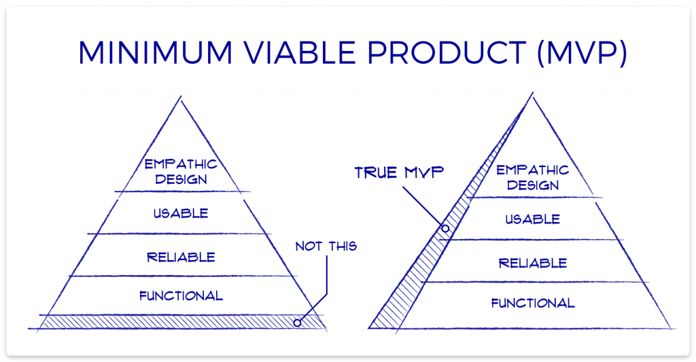

Õpetaja Git koduleht

Ma õpin Noorem Tarkvaraarendaja eriala
Õpitud ained on:
- Projekti loomine
- Kontoritöö tarkvara
- Arvuti- ja taristu osad
- Multimeedia
WP portfoolio
Mis on MVP ja kuidas sa saad MVP printsiipi kasutada oma IT projektides
MVP (Minimum Viable Product) on toode, mis sisaldab vaid neid funktsioone, mis on vajalikud toote põhiidee testimiseks ja kasutajakogemuse hindamiseks. Selle eesmärk on toote kiire turule toomine, et saada tagasisidet ja teha edasisi täiustusi, säästes aega ja ressursse. IT projektides saab MVP printsiipi rakendada, arendades toote algversiooni, mis sisaldab ainult kõige olulisemaid funktsioone, võimaldades kiiret testimist ja tagasiside kogumist, et edaspidi teha informeeritud arendamisotsuseid.

Kuidas teha remote repo ja mis käskud on vaja kasutada.
1. Loo kaugreposiitrium GitHubis, GitLabis või muus teenuses:
2. Alusta kohalikku Git repository’t: Kui sul ei ole veel kohalikku Git repository’t, siis loo see järgmise käsuga:
git init
3. Lisa kaugrepo (remote repository) oma kohalikku projekti: Kaugrepo lisamiseks kasuta käsku: git remote add origin repository_URL
4. Pushi kohalikud muudatused kaugrepo’sse: Esimesel korral pushimiseks kasuta: git push -u origin master
5. Tõmba muudatused kaugrepo’st: Kui soovid muudatusi kaugrepo’st alla tõmmata, kasuta: git pull origin main
.